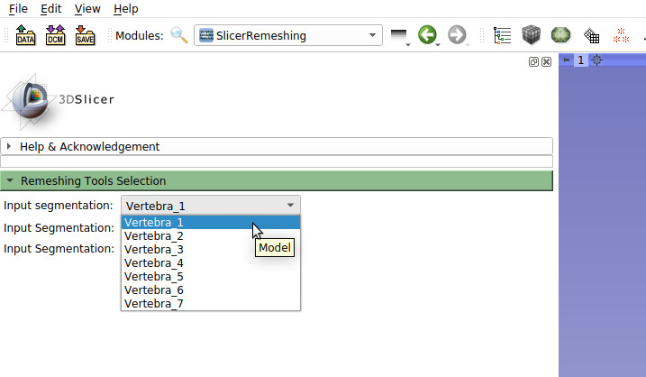

The Slicer Meshing extension is a GUI for two state of the arts meshing tools Instant Meshes and Robust Quad/Hex-dominant Meshes. It is devloped in VisSim research lab at Koblenz University.
The following section provides instructions on how to use these tools. A more detailed instruction can be found in the demo video below.